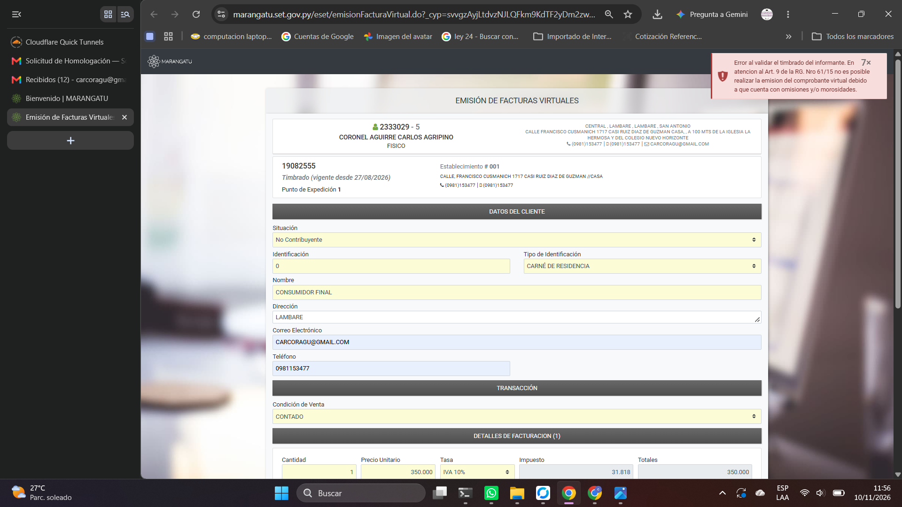
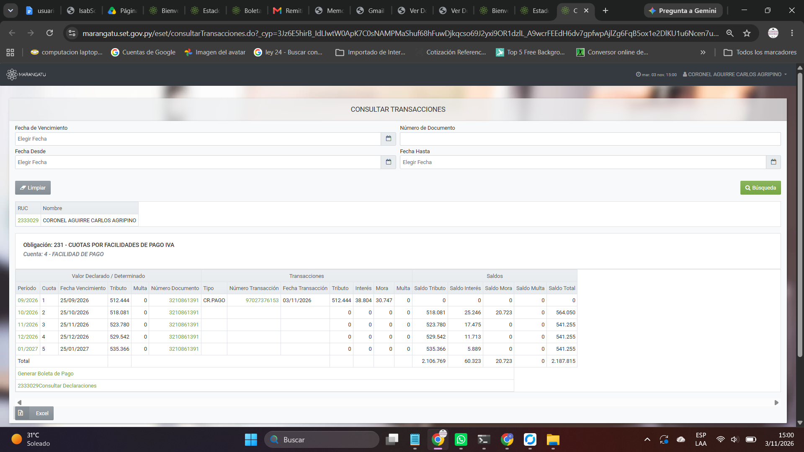
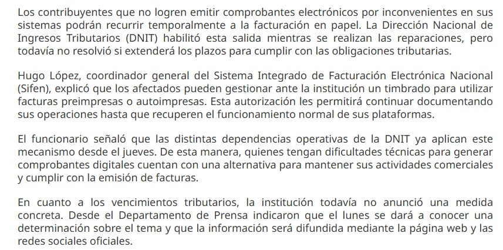

⚠️
Sistema parcialmente restringido por bloqueo DNIT
IsabSoft (Carlos Coronel Aguirre, RUC 2333029-5) opera bajo restricción técnica impuesta por la DNIT desde agosto de 2026, a pesar de contar con Facilidad de Pago activa. Esta página documenta la situación con evidencia completa para clientes, autoridades y la propia DNIT.
Estado actual del sistema
🔴 Bloqueado
Marangatú — bloqueo DNIT
Amparo constitucional en proceso
⚠️ Limitada
Timbrado 19082555 activo
Canal alternativo habilitado
🔴 Caído
Portal DNIT caído desde nov/2026
(caso Itti/Ueno Bank)
⏳ En proceso
Defensoría Pública solicitada
Seguimiento 26/11/2026
📋 Para el cliente que recibió este comprobante
Si usted recibió un comprobante de IsabSoft con la observación "IsabSoft — Bloqueo DNIT documentado. Verificá: [esta URL]", sepa que:
✅ El comprobante que usted recibió es un documento legítimo emitido con timbrado vigente, habilitado y autorizado por la propia DNIT como mecanismo de facturación temporal durante las fallas del sistema electrónico.
✅ IsabSoft cumplió todas sus obligaciones tributarias, regularizó su situación mediante Facilidad de Pago activa y presentó los recursos legales correspondientes. El bloqueo es unilateral e injustificado de parte de la DNIT.
✅ Esta página es evidencia pública. Puede compartirla, descargarla o presentarla ante cualquier autoridad, incluyendo la propia DNIT, si en algún momento le consultaran sobre la validez del comprobante que usted recibió.
Cronología documentada
Agosto 2026
✅ Facilidad de Pago aprobada por DNIT
IsabSoft formaliza la regularización de su situación fiscal. Facilidad de Pago N°3210861391 aprobada. Las obligaciones principales quedan bajo plan de pago activo.
26 de agosto 2026
🔴 DNIT bloquea dosificación de timbrado
A pesar de la Facilidad de Pago activa, el sistema Marangatú bloquea la posibilidad de solicitar preimpresos y autoimpresor. Se inician gestiones ante la DNIT. El bloqueo persiste 93+ días consecutivos.
27 de agosto 2026
⚠️ DNIT habilita Factura Virtual — contradicción documentada
La DNIT habilita el canal de Factura Virtual (timbrado 19082555) con los mismos incumplimientos que usa para justificar el bloqueo del autoimpresor. Esto documenta una contradicción interna de la propia institución.
30 de octubre 2026
✅ Recurso de Reconsideración presentado
Recurso formal N°72600010979 presentado vía Marangatú (Form.726-2). 6 fundamentos jurídicos, 7 pedidos formales, medida cautelar solicitada. Dependencia DGRAC.
20 de noviembre 2026
✅ Solicitud de Defensor Público (Amparo Art.134 CN)
Email enviado a defensoria.asuncion@ministeriopublico.gov.py con 8 adjuntos documentando el caso. Solicita defensor para Amparo Constitucional por violación Art.87, 107 y 9 CN.
Noviembre 2026
🔴 Portal DNIT cae por caso Itti/Ueno Bank
El portal servicios.set.gov.py cae por una falla sistémica vinculada al caso Itti/Ueno Bank. Ningún contribuyente puede descargar su certificado digital F1. Afecta a todos los emisores de Factura Electrónica del país.
25 de noviembre 2026
⚠️ DNIT reconoce su falla — autoriza facturas en papel
Hugo López, coordinador general de SIFEN (DNIT), declara públicamente: "Los contribuyentes que no logren emitir comprobantes electrónicos podrán recurrir temporalmente a la facturación en papel." (Fuente: ADN Digital, 25/11/2026). Admisión institucional documentada.
26 de noviembre 2026
✅ Seguimiento formal a Defensoría Pública
Segundo email a Defensoría Pública con hechos nuevos: falla sistémica DNIT + caso documentado de cliente (CBTEC) bloqueado a pesar de haber completado todos los pasos de activación FE.
Evidencias documentadas
01
Facilidad de Pago activa — DNIT aprobó regularización
Agosto 2026
FP N°3210861391 — aprobada por DNIT. Las obligaciones principales de IsabSoft están bajo plan de pago vigente. El bloqueo posterior es unilateral y sin sustento normativo uniforme.
VERIFICADO
02
Bloqueo Marangatú — 93+ días consecutivos documentados
26/08/2026 — vigente al 27/11/2026
El sistema Marangatú bloquea la solicitud de timbrado a pesar de la Facilidad de Pago activa. Se documentaron capturas en 20+ fechas distintas. Las tres imágenes a continuación muestran el inicio del bloqueo (26/08), su persistencia en octubre y en noviembre de 2026.
93+ DÍAS

Día 1 — 26/08/2026 · Inicio del bloqueo

Día 62 — 27/10/2026 · Bloqueo persiste

Día 76 — 10/11/2026 · Sin resolución
02b
Primera cuota de Facilidad de Pago — abonada
Agosto 2026
IsabSoft cumplió con el plan de pago aprobado por DNIT. La imagen muestra el comprobante de la primera cuota pagada. El contribuyente honró el acuerdo — el bloqueo continuó de todas formas.
PAGADO

💳 Comprobante pago 1ra cuota FP N°3210861391 · IsabSoft cumplió el acuerdo
03
Recurso formal N°72600010979 ante DGRAC
30/10/2026
Presentado vía Marangatú. 6 fundamentos jurídicos, 7 pedidos formales. Incluye medida cautelar para no cancelar FP durante el proceso. Archivo: solicitud de recurso en marangatu.pdf
PRESENTADO
04
Comunicado oficial DNIT — Falla sistémica reconocida
25/11/2026
Hugo López (coordinador SIFEN): "Los afectados pueden gestionar ante la institución un timbrado para utilizar facturas preimpresas o autoimpresas." Fuente: ADN Digital. La propia DNIT reconoció públicamente que su sistema electrónico no es confiable como canal único.
ADMISIÓN DNIT

📰 Titular — ADN Digital · 25/11/2026 · "DNIT habilita facturas en papel ante fallas del sistema electrónico"

📋 Declaraciones completas de Hugo López, coordinador SIFEN · 25/11/2026
05
Certificado digital F1 vigente — portal DNIT caído
17/11/2026 — 17/11/2028
Identificador: 67t1817n2r2unoec5b3aq5aru5. Emitido por DINATIC. Estado en portal: Vigente ✅. El .pfx no se puede descargar porque el portal servicios.set.gov.py arroja error "No se pudo ejecutar la acción, intente más tarde". La falla es del portal DNIT, no del certificado ni del contribuyente.
PORTAL CAÍDO

🖥️ Portal DNIT servicios.set.gov.py · 25/11/2026 · Certificado "Vigente" — Error: "No se pudo ejecutar la acción, intente más tarde"
06
Solicitud Defensoría Pública — Amparo Art.134 CN
20/11/2026 · Seguimiento 26/11/2026
Email enviado con 8 adjuntos al Ministerio Público. Solicita defensor para Amparo Constitucional. Fundamentos: Art.87 (derecho al trabajo), Art.107 (industria lícita), Art.9 CN. Archivo: Solicitud de defensor publico.pdf + enviado_seguimiento_26112026.pdf
EN PROCESO
07
Autoimpresor funcional — el sistema que nunca falló
Histórico — vigente
El sistema autoimpresor de IsabSoft (GestFact) opera sin interrupciones. Es prueba directa de que la infraestructura del contribuyente es operativa. Los únicos fallos documentados provienen de la infraestructura del Estado (Marangatú, portal F1, SIFEN).
SIEMPRE OK
Base legal
Derechos constitucionales y legales afectados
Art. 87 CN
Derecho al trabajo — nadie puede ser privado de ejercer su actividad lícita sin causa justificada.
Art. 107 CN
Derecho a ejercer toda industria lícita — el Estado no puede imponer obligaciones que hagan imposible su cumplimiento.
Art. 9 CN
Nadie puede ser obligado a hacer lo que la ley no manda ni privado de lo que ella no prohíbe.
Art. 134 CN
Acción de Amparo — protección urgente ante actos u omisiones manifiestamente ilegítimos de autoridades.
Ley 7143/2023 Art.11 num.6
La DNIT tiene el deber de agilizar trámites y eliminar barreras al contribuyente formal — no de crearlas.
Art. 171 Ley 125/91
La FP activa no puede ser cancelada durante el proceso recursivo sin resolución fundada.
✅ Declaración del contribuyente
IsabSoft (Carlos Coronel Aguirre, RUC 2333029-5) NO es evasor fiscal.
IsabSoft regularizó su situación, presentó todos los recursos legales disponibles, cooperó con las instituciones competentes y documentó cada paso. El bloqueo no fue por evasión — fue impuesto unilateralmente por la DNIT a pesar del cumplimiento activo.
La diferencia entre un evasor y un contribuyente bloqueado es precisamente esta documentación. Esta página existe para que cualquier persona — cliente, autoridad, o la propia DNIT — pueda verificar los hechos.
¿Estás en la misma situación?
🇵🇾 Este caso no es único — es un problema sistémico en Paraguay
Si vos también tenés una Facilidad de Pago activa y la DNIT igualmente te bloquea el timbrado en Marangatú, no estás solo. Esta situación afecta a cientos de trabajadores independientes y pequeñas empresas que intentan cumplir con sus obligaciones tributarias y el sistema del Estado no les permite hacerlo.
Esta página existe para documentar el problema y servir como recurso público. Si tu caso es similar, podés usar esta evidencia como referencia en tus propios reclamos.
¿Qué podés hacer si la DNIT te bloqueó injustamente?
Paso 1 — Documentá todo
Guardá capturas de pantalla de Marangatú con fecha visible. Guardá todos los comprobantes de pago, correos enviados y respuestas (o silencios) de la DNIT. La documentación es tu única herramienta.
Paso 2 — Presentá un Recurso de Reconsideración
Vía Marangatú, Form.726-2, dirigido a la DGRAC. Fundamentos: Facilidad de Pago activa, Art.171 Ley 125/91 (no pueden cancelarla sin resolución fundada), bloqueo desproporcionado, Art.87+107 CN.
Paso 3 — Escribí a la Defensoría Pública
Email a defensoria.asuncion@ministeriopublico.gov.py — gratuita, todo electrónico. Pedí un defensor para interponer Amparo Constitucional (Art.134 CN) por violación del derecho al trabajo (Art.87+107 CN). Adjuntá tus evidencias.
Paso 4 — Amparo Constitucional
Si el recurso no prospera, el Amparo ante juez es el único instrumento que puede ORDENAR a la DNIT levantar el bloqueo. Requiere abogado matriculado — la Defensoría Pública puede asignarte uno gratuitamente.
Mientras tanto — seguí facturando legalmente
La DNIT autorizó explícitamente el uso de facturas en papel/autoimpresor mientras duren las fallas del sistema electrónico (Hugo López, coordinador SIFEN, 25/11/2026 — ver Evidencia 04). Usá ese mecanismo y documentá cada comprobante emitido.
📢 Compartí esta página
Si conocés a alguien en la misma situación, compartí esta URL. Cuantos más casos documentados existan, más difícil le resulta a la DNIT ignorar el problema y más fuerte se vuelve el argumento sistémico ante cualquier instancia judicial o pública.
Esta página es de acceso libre, puede descargarse, citarse e imprimirse. No tiene fines comerciales — es un recurso ciudadano.
Contacto para casos similares: IsabSoft — Carlos Coronel · RUC 2333029-5 · Asunción, Paraguay
Texto de observación en comprobantes emitidos
OBS. en comprobante
IsabSoft — Factura Electrónica SIFEN en proceso de activación. Bloqueo técnico DNIT documentado públicamente. Verificá la evidencia completa en: carcoragu.github.io/gestfact-demo/evidencia-dnit · RUC 2333029-5 · Amparo Art.134 CN en trámite.